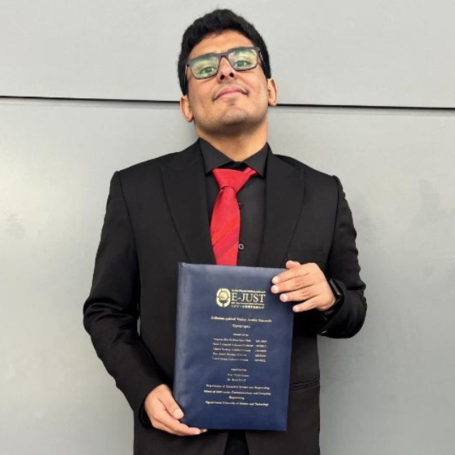
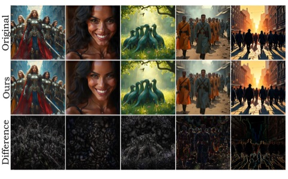
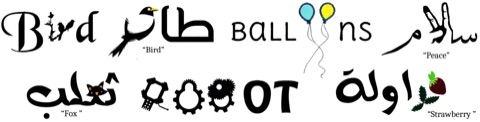

Tameem Bakr
I'm a Ph.D. student in Machine Learning at MBZUAI, advised by Nils Lukas. I work on secure and trustworthy machine learning, with a focus on watermarking and collaborative learning.
Previously, I did my M.Sc. at MBZUAI and was a research intern at CISPA's SprintML Lab with Adam Dziedzic and Franziska Boenisch.

Research
Highlighted papers are first-author or award-winning work.

First-Place Solution to NeurIPS 2024 Invisible Watermark Removal Challenge
ICLR 2025 WMARK and NeurIPS 2025 GenProCC workshops (oral)
First place in both tracks of the NeurIPS 2024 Erasing the Invisible challenge.

Khattat: Enhancing Readability and Concept Representation of Semantic Typography
ECCV 2024 Workshops (*equal contribution)
CRC Press 2026
Cross-Lingual Transfer Learning for Arabic Signature Verification: Dataset and Baseline Evaluation
Applied Machine Learning on Sensing Technologies, CRC Press, 2026
Under review
- Tameem Bakr, Nils Lukas. ICE: Innovation-based Contribution Estimation. CVPR 2027
- Tameem Bakr, Yasser Ashraf, Nils Lukas. Credit and Blame in LLM Multi-Agent Systems: A Survey of Contribution Attribution. FAccT 2027
- Yasser Ashraf, Tameem Bakr, Dushyant Singh Chauhan, Raul Astudillo, Nils Lukas. From Traces to Recipes: Constructing and Distilling Reusable Procedural Knowledge into Language Models. ICLR 2027